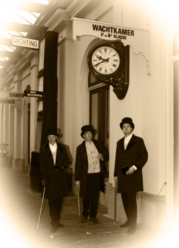

Interactive web-based flood modeling
Fedor Baart
K. K. Ha, A. van Dam, G. Donchyts, M. Siemerink
3di.nu/international

- Deltares
- Neelen and Schuurmans
- Delft University of Technology
Trends in modelling
| Passive | → | Interactive |
| Mono-displinary | → | Integrated |
| Solitary | → | Social |
| Local | → | Remote |
| Handcrafted | → | Industrialized |
2D
1D
Model Engine
- Subgrids/Quadtree 2D, SOBEK 1D
- Overland flow, Groundwater, Infiltration, Evaporation, Interception, Channel flow
- Weirs, Culverts, Pumps, Orifices
Grid
Models
- Netherlands
- Singapore
- South Africa (Kaapstad area)
- USA (San Francisco Bay)
| Passive | → | Interactive |
Feel the model.

Old
New
Hollywood
# create a new model
model = BMI(engine="subgrid")
# intialize the model
model.initalize("input.ini")
# run a timestep
model.update(dt)
# cleanup
model.finalize()
Introspection
# get variables from a running model
var = model.get_var("waterlevel")
# set variables into a running model
model.set_var("waterlevel", array)
Files → memory

Clean memory

Clean memory

Pump memory
# get pump type
model.get_var_type("pumps") # -> pump
# inquire pump type
model.inq_compound_field("pump", 4)
# -> "start_level_suction_side", double, rank=0
model.get_var("pumps") # -> "dataframe"
| Mono-displinary | → | Integrated |
Coupling
Architecture
| Solitary | → | Social |

- Interesting
- Relevant
- Important
- Essential
- Existential
Gezellig
End users
- Local authority
- Planning sessions
modellers

End user: general public
Rendering
Subgrid model
Interpolation
Interpolation

Rendering
Tiling
Rivers
| Local | → | Remote |
Communication
Communication
Caching
Pushing

Model Messages Interface
{
'shape': [30000,2],
'dtype': 'float64',
'standard_name': 'sea_surface_altitude',
'units': 'm'
}
\x03\x02\x06\xb3\x03\x02\x06\xb3\x03\x02\x06\xb3\x03\x02\x06\xb3\x03\x02\x06\xb3\x03\x02\x06\xb3
Cloud
Amsterdam
Amazon
| Handcrafted | → | Industrialized |
Automate everything!
Preparing models
Pack and ship

Model factory
Model factory
Scriptability
Open Source
oss.deltares.nl
github.com/openearth
github.com/nens
github.com/lizard